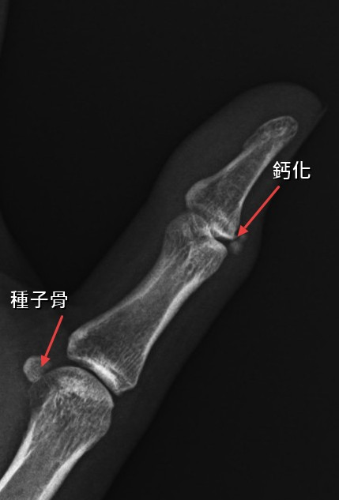
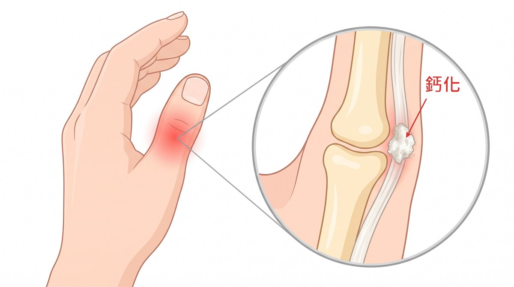

骨科仁心
手指也會長石頭？

「醫師，我這隻手是不是壞掉了？」
中年家庭主婦，兩天前左手拇指開始疼痛，愈來愈厲害，痛到瓶蓋轉不動，毛巾擰不了。她一邊說，一邊小心翼翼地把左手放在桌上，連碰都不太敢碰。
「我沒有撞到，也沒有扭到。」
「我有上網查過，說是筋發炎。」
「妳這隻手平常做些什麼事？」
「家務啊！厝內大大小小的代誌攏是我咧做。」她說得很自然，好像那是理所當然的事。
問完病史、做理學評估後，我幫她做了影像檢查。 答案就在 X 光上：拇指關節旁邊，有一個不規則白白的東西——講白話一點，就是肌腱上長石頭鈣化。


這類手痛，我一定會問「妳平常這隻手最常做什麼」。答案常常在生活裡，不在片子上。
「所以我不是媽媽手？」她愣了一下，接著追問：「這要怎麼辦，要開刀嗎？我以後手還能用嗎？」
那顆石頭是什麼？
肌腱是連接肌肉跟骨頭的組織，反覆發炎時，在局部會堆積鈣質，變成一顆硬硬的沉積物，稱為鈣化性肌腱炎。最常發生在肩膀，手部相對較少見，但仍會發生。
另外那顆叫種子骨，是正常構造，在固定的位置，邊緣光滑、形狀規則的骨頭。 而鈣化則邊界比較不規則，質地類似牙膏或粉筆。
怎麼治療？
- 適度休息——戴用護具，避免反覆刺激。調整用手的方式，用工具（開瓶器）輔助施力。
- 藥物——急性期先消炎止痛處理症狀。
- 物理治療——超音波等方式。
- 注射、體外震波、高能量雷射——症狀較嚴重或有加速復原的需求，可考慮使用。
患者在藥物與物理治療之外，還加上高能量雷射，症狀很快就改善了。
有症狀的時候，不要自己查自己猜。尋求專業的意見，才能正確處理，避免延誤；不然痛的還是自己。
本文為一般衛教資訊，不能取代醫師的診察、診斷或治療。 文中案例已隱去可辨識資訊。每個人的狀況都不同，請與您的主治醫師討論後再決定治療方式。